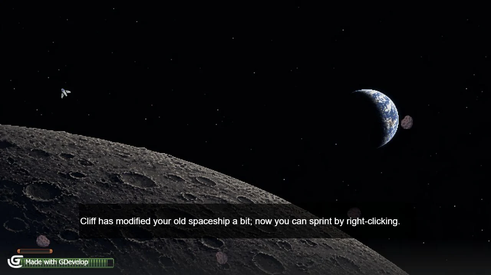
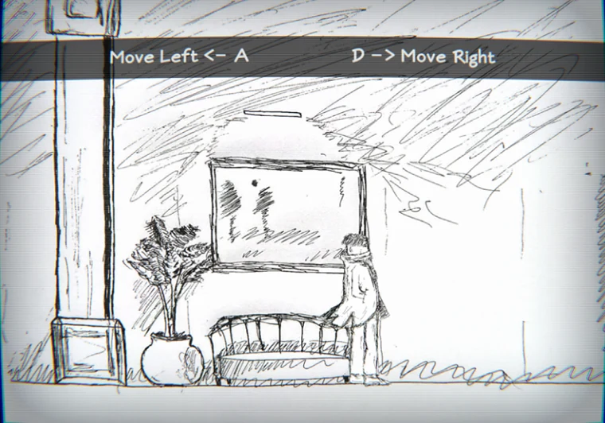
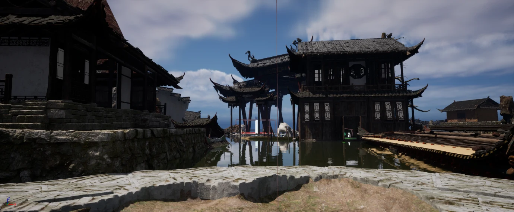
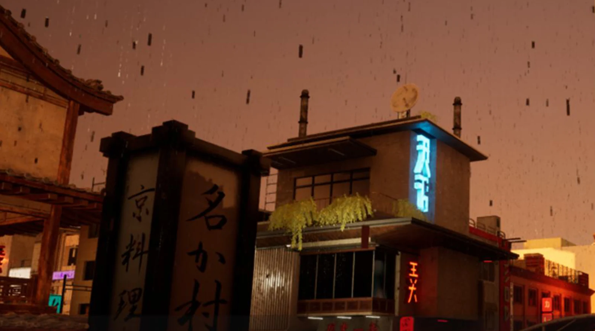
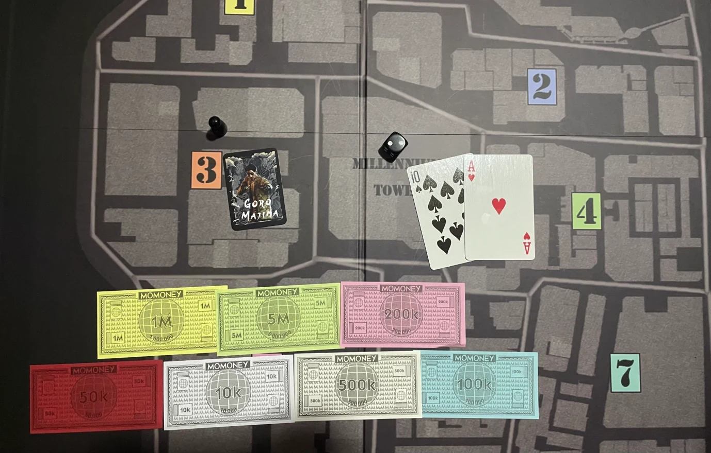

( SELECTED WORK )
Selected work.
Six projects, across digital games, environments and tabletop systems.
6 projects
Wonder WebbyUNITY / TEAM PROJECTExploration
Moon VagrantGDEVELOP / SOLO PROTOTYPESpace survival
TestamentUNITY / NARRATIVE PROTOTYPEStory & interaction
Jiangnan Water TownUNREAL / ACADEMIC LEVEL PROTOTYPEHybrid FPS level
Fukuoka Central StreetUNREAL / ENVIRONMENT STUDYStreet & interior design
Dragon of KamurochoTABLETOP / NON-COMMERCIAL STUDYTerritory & economyA chapter still taking shape.
More work will join the collection as its story and contribution are documented.
( BEHIND THE WORK )
Not just the world.The way it feelsto be inside it.
This portfolio brings together the games I take part in and the ideas behind them. Each project leaves room for the work itself, the process and my contribution.
Personal experiments and team projects, with my part in each documented.